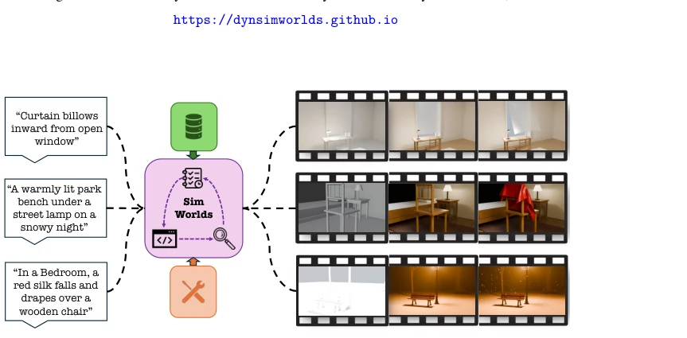
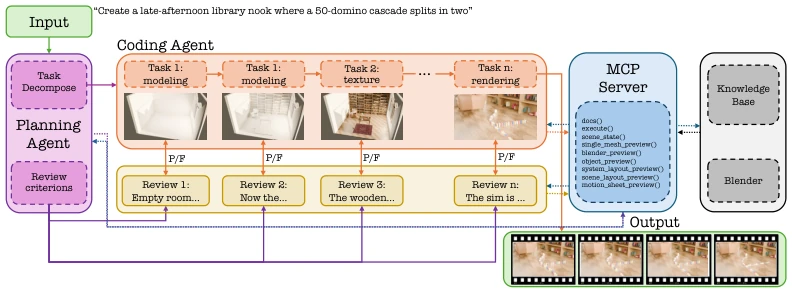
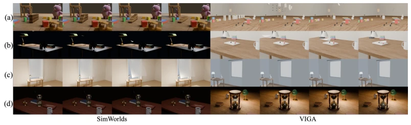

SimWorlds: A Multi-Agent System for Dynamic 3D Scene Creation
Chunjiang Liu, Xiaoyuan Wang, Haoyu Chen, Yizhou Zhao, Ming-Hsuan Yang, László A. Jeni abspdf
论文点评Review
这篇论文给“看起来像真的”的幻觉泼了冷水。SimWorlds 不满足于生成能看的 Blender 文件，非要搞懂背后的物理求解器。现在的 LLM 生成 3D 场景，要么像 VIGA [8] 那样只看渲染图，要么像 NeRF 那样黑盒不可编辑。作者搞了个多智能体系统，把“机制正确性”提上日程。虽然听起来很硬核，但依赖 LLM 做视觉判断还是有点玄学，而且只支持纯文本，没图不行。不过对于需要物理训练数据的具身智能来说，这确实是个稀缺的“可编辑资产”。它证明了在生成式 AI 时代，代码的正确性比像素的逼真度更重要，尽管这可能会让那些只想生成“好看视频”的模型显得有点像个只会写代码的工程师。
This paper casts a cold shower on the "looks real" hallucinations. SimWorlds is not satisfied with generating viewable Blender files; it insists on understanding the underlying physics solver. Current LLMs generating 3D scenes either look only at rendered images like VIGA [8], or are black-box and uneditable like NeRF. The authors developed a multi-agent system, putting "mechanism correctness" on the agenda. Although it sounds very hardcore, relying on LLMs for visual judgment is still a bit esoteric, and it only supports pure text, cannot work without images. However, for embodied AI requiring physical training data, this is indeed a scarce "editable asset". It proves that in the generative AI era, code correctness is more important than pixel realism, although this might make models that only want to generate "good-looking videos" appear a bit like engineers who only know how to write code.
Embodied AI requires physics-grounded training data, but existing methods either generate static scenes [4][6] or generate uneditable neural representations [1][3]. Dynamic scene generation is harder because rendered videos may be faked by keyframe animations, rather than physics solvers. Existing Blender agents like VIGA [8] rely on visual feedback and cannot distinguish between cloth solvers and keyframes. This leads to generated scenes appearing correct, but in reality being unreusable or unsimulatable. We need a generation system capable of verifying underlying mechanisms (such as caches, modifiers) to ensure the output is true physical assets rather than visual deception. Especially for Embodied AI, incorrect physical mechanisms will cause trained policies to fail in reality, not just look fake.
The core is "phased construction + deterministic verification". The Pipeline is divided into Planner (global plan), Coder (write bpy scripts), Verifier (check engine state), Reviewer (view rendered images). The key innovation is the Scene Protocol, enforcing L1/L2/L3 hierarchical structure to ensure correct object grouping. The Verifier does not just look at images, but directly reads Blender runtime state (modifier stacks, physics caches), using BVH to test contact relationships. There is also a Tool Suite providing multi-view preview and state reading. Knowledge Base is automatically generated from Blender documentation. In the specific process, the Planner first outputs a global plan, then executes in a fixed order such as Modeling, UV, Texture, Deformation, Motion, each step has the Verifier blocking to ensure physics caches are baked, modifiers are mounted, and the Reviewer then confirms visual effects. This design avoids error accumulation; once the physical mechanism is wrong, it will not proceed to the next step at all.

Figure 1: SimWorlds turns text into dynamic, editable 3D Blender scenes. Given a natural- language prompt, a planner, coder, and reviewer cooperate to emit a .blend whose geometry, materials, lighting, camera, and motion all remain controllable for downstream editing and reuse.

Figure 2: Pipeline overview. The planner compiles the prompt into a single scene plan; construction then proceeds through a fixed stage sequence, each stage running the coder, a deterministic verifier (scene protocol, §3.2), and a reviewer, with failed checks triggering bounded local retries. Once all stages close, the scene is rendered as a frame-sequence video.
Self-built 4DBuildBench benchmark, 50 scenes, covering 5 solver types such as cloth/fluid/rigid. The baseline is VIGA [8]. Metrics are divided into two tracks: Engine-state audit (MPR/SPR) and VLM judge. Results show SimWorlds significantly leads in MPR (0.87 vs 0.67), indicating truer physical mechanisms. Ablation shows Verifier improves structural correctness, Stages improve visual quality. Editing tasks on BlenderBench also outperform VIGA. This indicates that relying solely on visual feedback cannot guarantee physical correctness; engine-level state checks must be introduced. Although the VLM score gap is not large, the huge gap in mechanism scores reveals the blind spots of existing methods, namely that they cannot see the "skeleton" behind the rendering.

Figure 3: Qualitative comparison across four dynamic sequences: (a) a domino cascade in a child’s bedroom; (b) a paper airplane landing on a cluttered desk; (c) a wind-blown curtain billowing over a desk; (d) a glass hourglass pouring sand from its upper to its lower bulb.